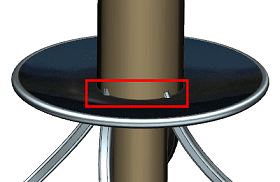
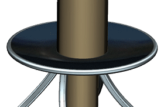
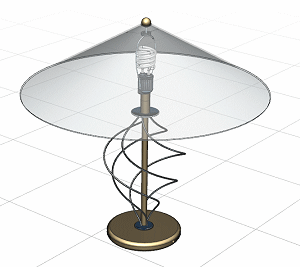

Zoom in to where the pattern of helixes terminates at the top.
Notice that since the radius of the helix is now larger, the length needs to be adjusted to compensate for the encroachment of the sweep feature that is based on the helix.

In the Part Navigator, double-click Helix.
Use the End Limit handle and drag down to an end value of 323 mm.
Click OK.

Make des18_85_helix_lamp_assm the work part.

Close all parts.